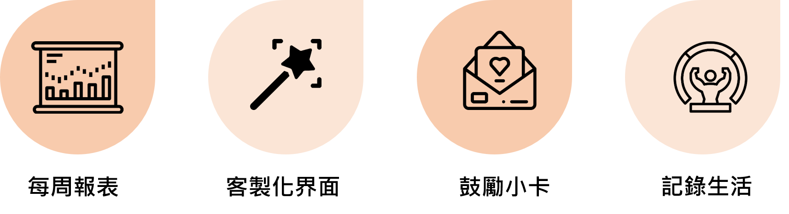

HAPPINES |
SADNESS |
經諮商心理師公會最新調查指出，25%的大學生曾受心理諮商，課業、人際、生活、家庭等等許多的困擾使他們沒那麼快樂了，去年年底就在短短的9天內發生6起的大學生自傷案，而在現實生活中也注意到身旁的人隨著離大學畢業越來越近，身上所背負的壓力跟責任心也越來越大，心理健康狀態時常跟壓力成反比，被現實壓得喘不過氣。
根據研究資料顯示，運動跟心情的提升是有密切的關係，它可使大腦的腦內啡分泌，讓心情更振奮、愉快，自信心更強，還可以讓人體的交感神經與副交感神經作用更趨平衡，可以幫助穩定心情、產生愉悅感，消除沮喪的心情。許多人在做完運動約20分鐘後，就開始感覺心情變得更好，情緒與思維更加正面清晰以及行動更加積極。因上述源由我們也提供紀錄運動時長的功能，希望藉由日常的紀錄能讓使用者正視運動的重要性。
出現在數據上、願意去輔導室諮詢的人已占有很大的比率，難以想像還要算上因輔導室要排隊或是不想告訴他人心理問題而卻步的人，在這些人中，願意自行前去就醫的人更是非常稀少，而我們的Be Better能夠幫助使用者作生活紀錄，回顧每一天的心情及休閒娛樂，並分析加以做成每週報表，希望能透過讓使用者記錄生活，在初期狀況產生時能幫助他們找出自己低落的原因，以求更好的方式尋求幫助或自我調節。
本系統為提供心情紀錄的應用程式，兼具以下四大特色且可供正處於心情低潮、需要陪伴者或是單純想記錄日常生活的人，並根據每日的紀錄提供一套數據分析，使使用者一目了然。
每周報表可以根據每日心情選擇及生活紀錄來繪製心情圖表並找出在記錄的事件中影顯心情的相關性指數;客製化介面可以依使用者的喜好調整介面的色彩，可時常做替換，避免感官的疲勞並增添新鮮感;鼓勵小卡讓使用者抽取小卡，增加互動感，提升使用者黏著度每週報表的塔羅牌也具相同效果;記錄生活提供記錄每日生活習慣及各種大小事，透過撰寫日記功能也可追溯過去了解自己的成長幅度。

學術界在眾多APP之下難以找到免費卻能提供多樣化的紀錄項目，並且我們提供記錄分析的功能，把使用者輸入的數據資料結合統計學演算法為使用者精準的分析紀錄數據，找出癥結點。 |
實務界1.每周報表對比每周狀況，幫助使用者評估自身狀況。 2.透過鼓勵小卡減少與使用者的互動距離讓他們感受到溫暖。 3.電話快撥功能快速連結需求，使各單位能立即取得緊急的個案。 |